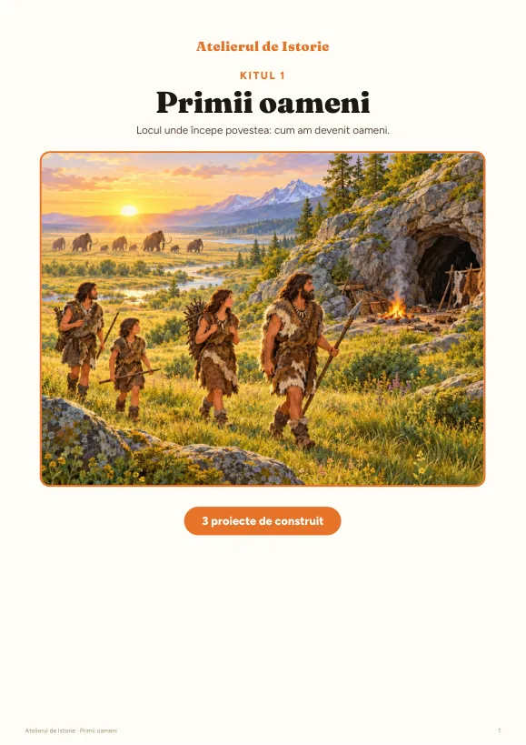
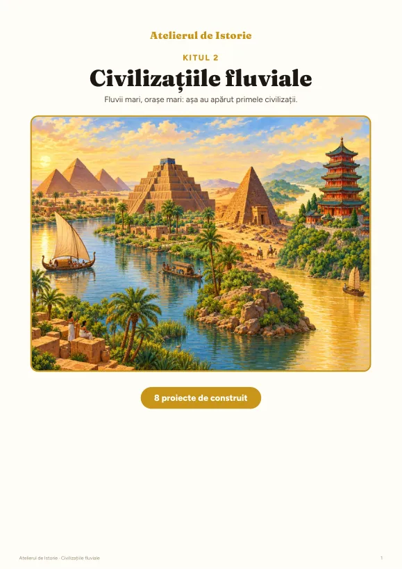
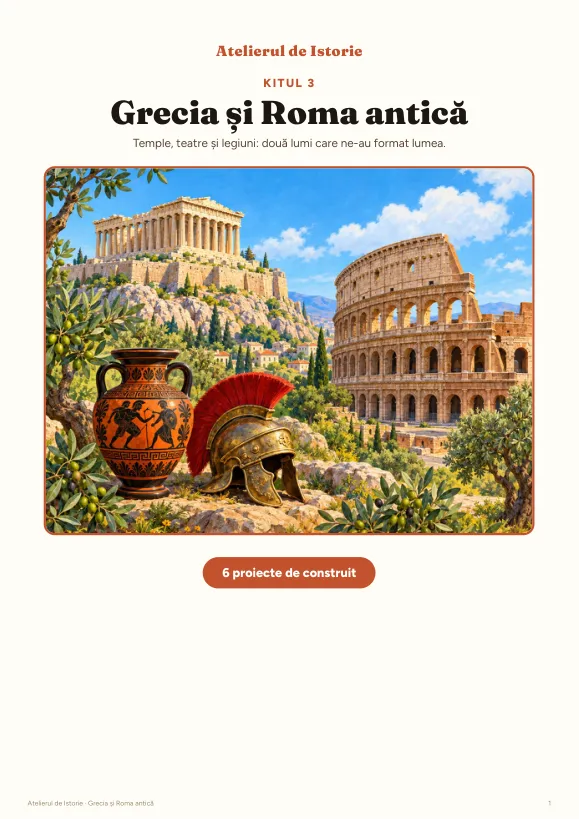
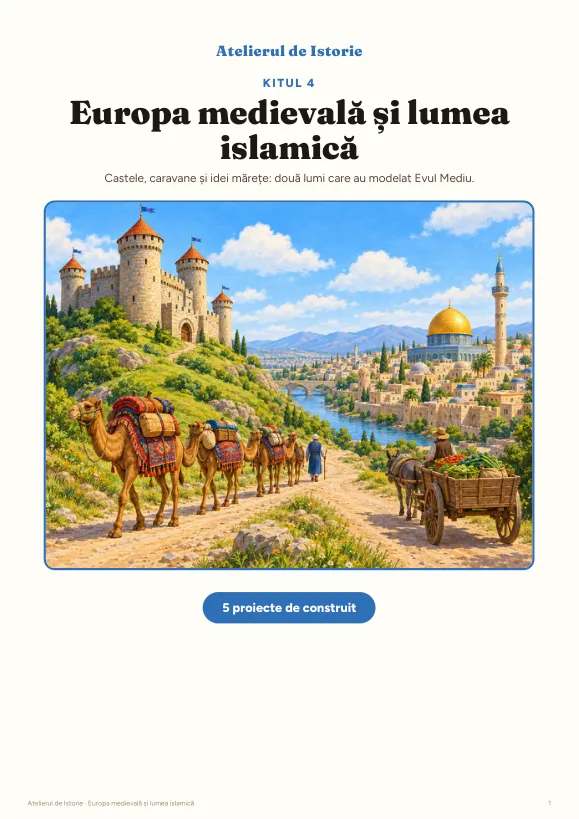
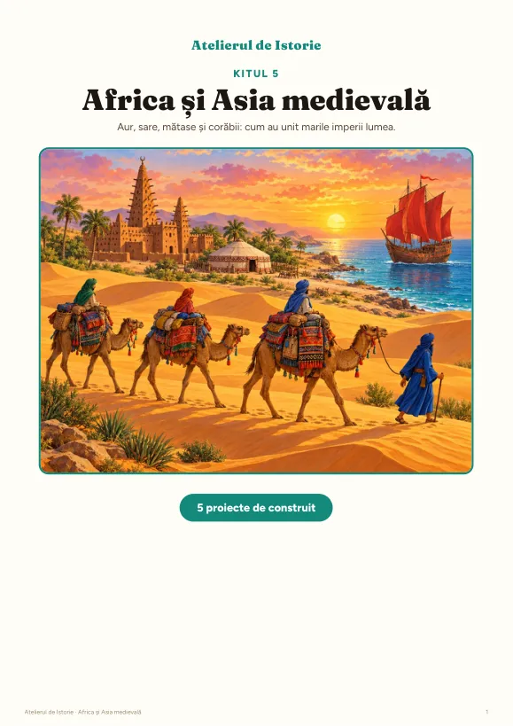
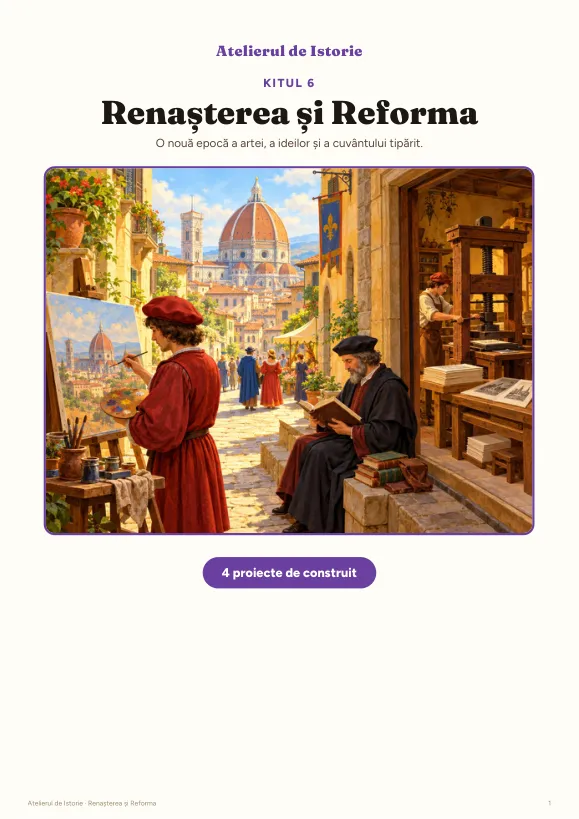
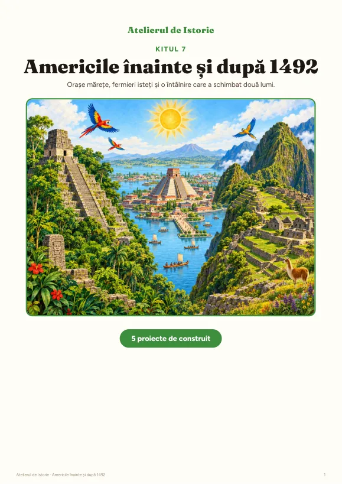
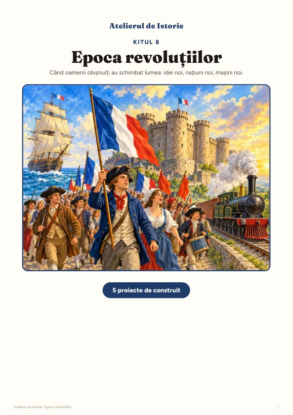
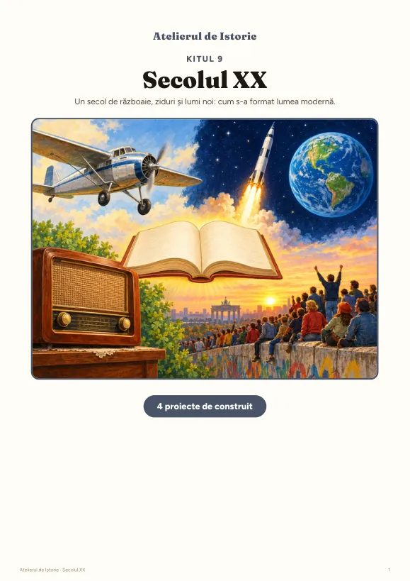

Kitul 2
Civilizațiile fluviale
52 de pagini ⬇ Descarcă · color⬇ Descarcă · de colorat deschide în browser
Kitul 3
Grecia și Roma antică
45 de pagini ⬇ Descarcă · color⬇ Descarcă · de colorat deschide în browser
Kitul 4
Europa medievală și lumea islamică
41 de pagini ⬇ Descarcă · color⬇ Descarcă · de colorat deschide în browser
Kitul 5
Africa și Asia medievală
43 de pagini ⬇ Descarcă · color⬇ Descarcă · de colorat deschide în browser
Kitul 6
Renașterea și Reforma
42 de pagini ⬇ Descarcă · color⬇ Descarcă · de colorat deschide în browser
Kitul 7
Americile înainte și după 1492
45 de pagini ⬇ Descarcă · color⬇ Descarcă · de colorat deschide în browser

Sfat pentru tipărire
Tipărește pe hârtie A4. Pentru machetele 3D, ideală este o hârtie mai groasă (160–200 g/m²), dar merge și hârtia obișnuită.
Pasul următor
Începe cu kitul 1 sau cu perioada pe care o predai acum. Fiecare kit începe cu un ghid pentru profesor.